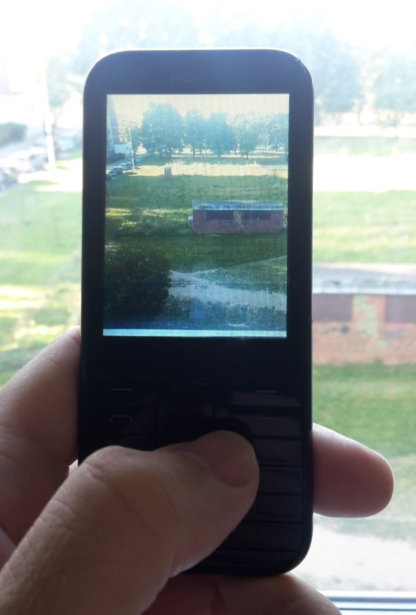

Basic app to take photo for MRE platform (including Nokia S30+). Tested on Nokia 225 with display resolution 240x320. KEY_OK - take photo, RIGHT_SOFTKEY - exit app. Photo saved on storage card. For using with Nokia mobile phone, app must be signed with IMSI (your SIM card) code. https://vxpatch.luxferre.top. Application file - "Photop.vxp".
